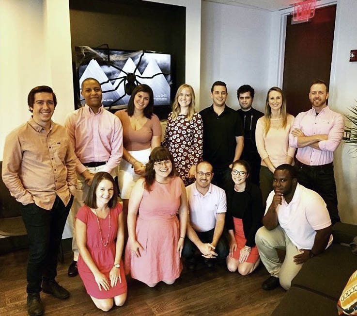
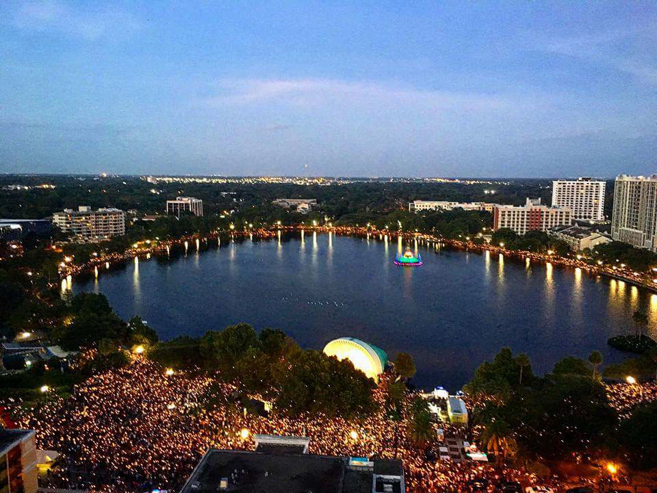
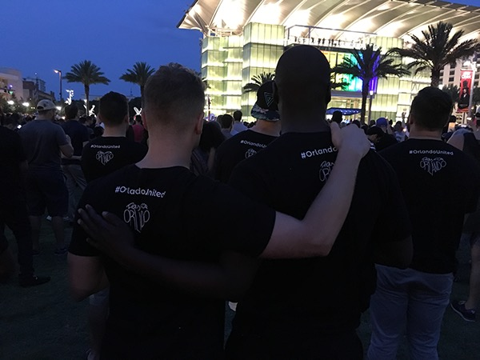
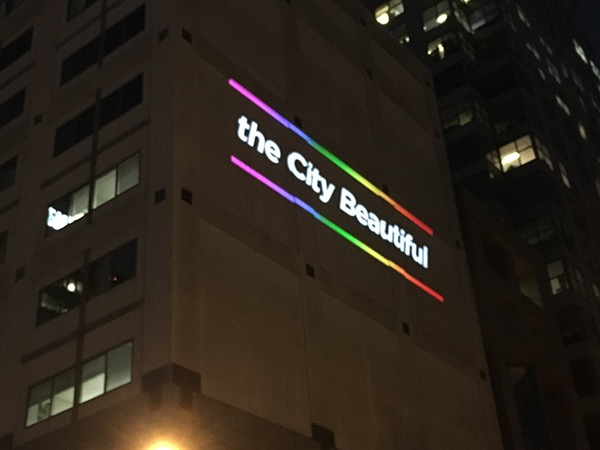
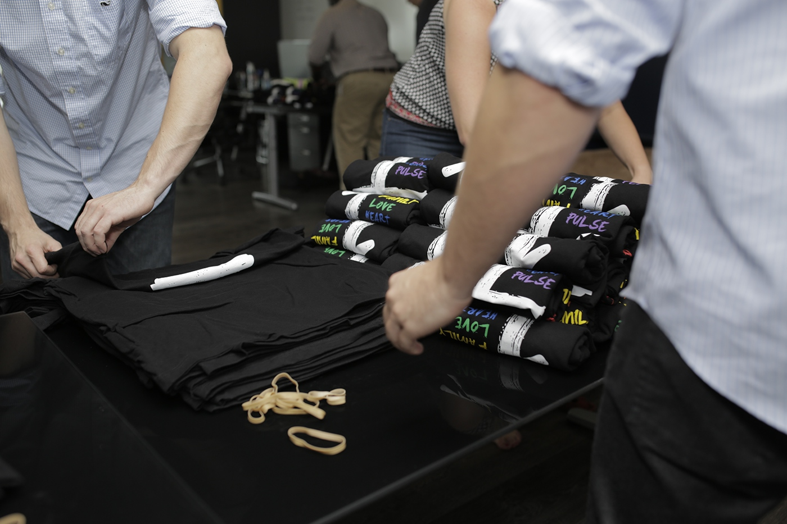
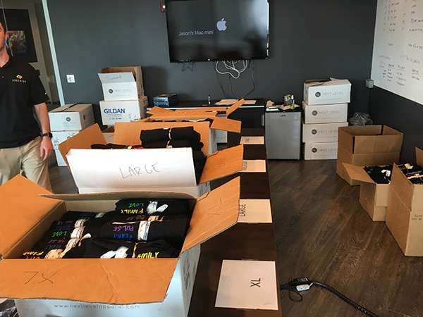
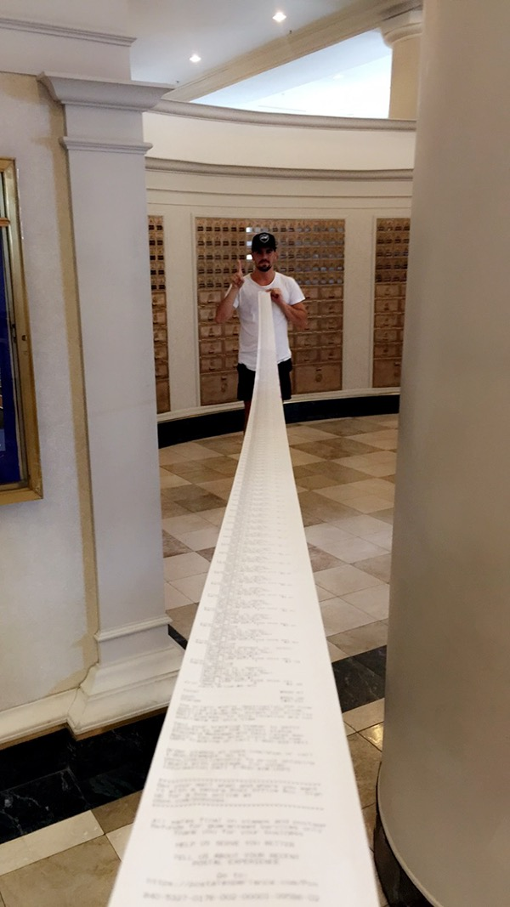
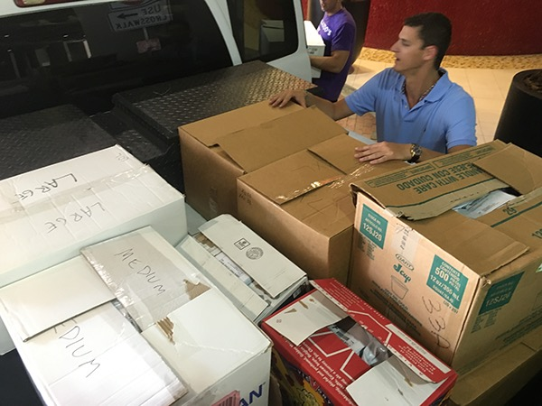
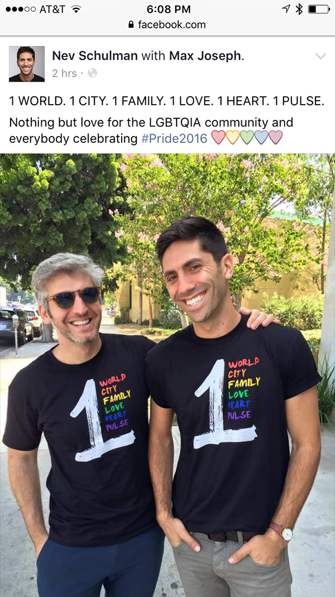
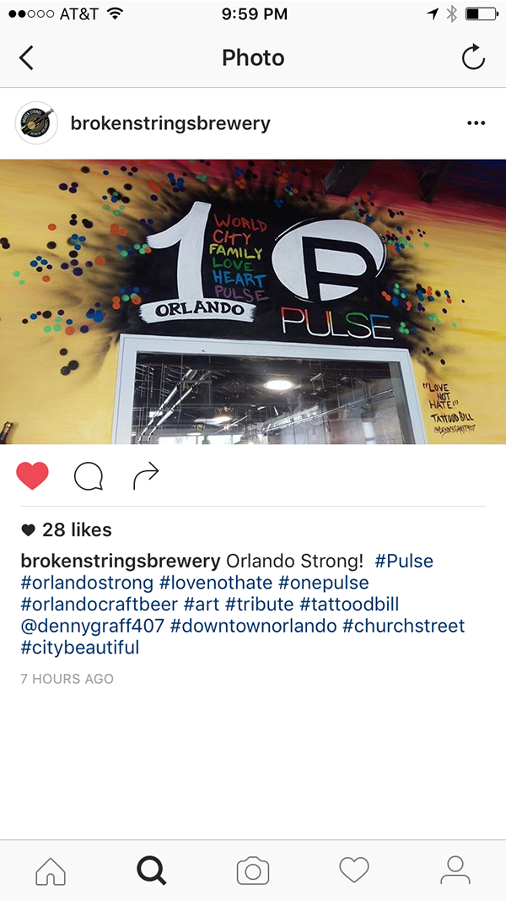

80k
Case study
Pulse Nightclub Fundraiser
After the Pulse tragedy in Orlando, my team and I organized a volunteer-led fundraiser built around a T-shirt design created in a matter of hours. What began as a small act of support quickly became a citywide production effort that raised more than $80,000 for victims' families.
tl;dr
- The campaign started as a same-day design response to help families after the Pulse tragedy.
- The 1Pulse shirt design used the Pride flag and a one-city / one-family message to unify rather than divide.
- The first run sold roughly 250 shirts in under 10 minutes at the candlelight vigil.
- The fundraiser expanded into online sales, radio mentions, social distribution, and volunteer fulfillment.
- The full effort raised more than $80,000, with profits donated to the victims' families.
How It Came Together
The City Changed Overnight
The attack at Pulse happened close to home, and the emotional reality of it hit immediately. By the next morning, the conversation inside the company had already shifted to action: do something useful, do it fast, and make sure it helps families rather than just signaling sympathy.
The plan came from that urgency. We would design T-shirts, sell them at the candlelight vigil, and donate every dollar of profit. The challenge was that the work had to feel human and unified while the city was still in shock.


The Message Had to Unify, Not Just Memorialize
The design team locked ourselves in a room to work through what the shirt needed to say. The answer could not be generic. It had to carry visible signs of support for the LGBT+ community while also expressing solidarity in a way the whole city could rally around.
The shirt used the Pride flag and the number one as both a graphic anchor and flagpole. The final message became: One World, One City, One Family, One Love, One Heart, One Pulse. The base color stayed black to acknowledge mourning, while the brighter colors made the message feel communal rather than heavy.
The Vigil Changed the Scale of the Project
The original expectation was modest: bring a few boxes of shirts to the candlelight vigil, sell them, and pass the money on. That assumption lasted only minutes. Roughly 250 shirts sold in less than 10 minutes.
The vigil made the real demand visible. This was not a niche fundraiser. It was a city looking for a way to participate in a meaningful show of support. The work had to scale quickly.







The Office Became a Fulfillment Operation
Once the first run sold out, the work shifted from campaign design into production and logistics. We turned the office into a makeshift packaging facility, hand-rolled shirts, set up online purchasing, and relied on radio, social channels, and word of mouth to keep the fundraiser moving.
The most meaningful part of the project was that the visual work did not stop at the design file. It stayed useful all the way through production, distribution, and the broader community response.
The Campaign Spread Because People Wanted to Carry It Forward
Radio mentions, social sharing, local businesses, and partner graphics helped the fundraiser travel further than a single vigil or a single office ever could have managed on its own. The design became a visible token of solidarity at the exact moment people were looking for one.
That mattered more than metrics alone. The campaign moved because the message was emotionally clear, easy to share, and tied directly to something concrete: helping families.


Outcome of the Work
The fundraiser raised more than $80,000, with profits donated to the families of the Pulse victims. But the result was larger than the final number. It showed what design can do when it leaves the safety of a portfolio artifact and becomes a real operational tool for people trying to help.
It also remains one of the clearest examples of the instincts I trust most: read the situation quickly, find the emotional center of the message, and move before the opportunity to do real good disappears.
Implications
- Creative work can act as infrastructure when people need a visible way to participate.
- Message clarity matters most when a response has to scale quickly across many channels.
- The value of design is highest when it survives contact with production, logistics, and real human urgency.
That is why the project still belongs in the portfolio. It is not a conventional client story, but it says something important about how I work when the stakes are human and the timeline is measured in hours rather than quarters.
Continue Exploring
Contact
If you want to talk about the Pulse fundraiser work, I'd be glad to share more context.
This story matters to me because it sits at the intersection of design, leadership, and community response. If you want to talk through it, I'd be glad to continue the conversation.
A good conversation is usually a better start than a formal intake form.